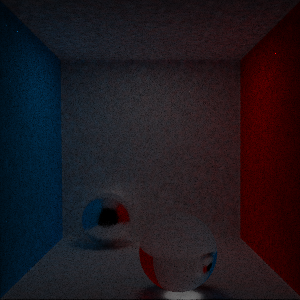
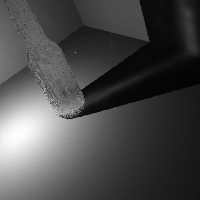
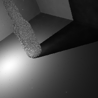
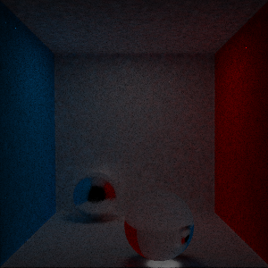
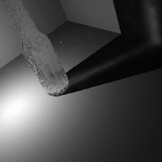
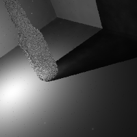
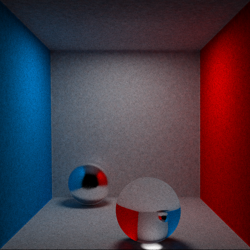

COS 526 Assignment 3: Khaled TinubuPhoton Mapping Part 2 — Writeup
Photon Mapping
Continuation from part 1. In order to better model light flow through glass by add fresnel reflections and translucency. I also implemented cone filtering.
Photon Emission

No filter
cone filter with a constant of 1.5
translucency
For transmission, The transmitted direction is calculated in a similar way to how we calcluate specular reflection but we center our lobe around the direction of perfect refraction. How close the lobe is to the direction is determined by the properties of the material

highly transparent

sdfarough1.png

No filter

highly transparent

sdfarough1.png
random sampling was used to deal with aliasing
Images

final cornell box:
500 pixels
400 samples per pixel
200 photons per estimate
0.01 search distance
0.03 tone mapping constant
2,000,00 photons in general map
500 pixels
400 samples per pixel
200 photons per estimate
0.01 search distance
0.03 tone mapping constant
2,000,00 photons in general map
command line arguments:
-resolution: height and width of output image in pixels-num_samples: number of samples per pixel
-general_search_range: maximum knn search distance for general protons as a proprtion of the radius of the bounding box of the scene
-caustic_search_range: maximum knn search distance for caustic protons as a proprtion of the radius of the bounding box of the scene
-num_general_map: number of photons in the general map
-num_caustic_map: number of photons in the caustic map
-num_photon_estimate: number of photons used in for each radiance estimate for a point
-tone_map_const: constant for Reinhard tonemapping
default values:
-resolution: 200 200-num_samples: 20
-general_search_range: 0.07 (if you use less photons or have a bigger scene, increaase the search range)
-caustic_search_range: 0.1 (same advice as general_search_range)
-num_general_map: 500000
-num_caustic_map: 1000000
-num_photon_estimate: 150
-tone_map_const = 0.3 (try varying up to 1.8 and down to 0.05)
Sources:
Using_the_modified_Phong_reflectance_model_for_Physically_based_rendering_
basics-light-measurement
light-intensity-of-an-rgb-value
brdf
reflection_refraction
css
tone mapping